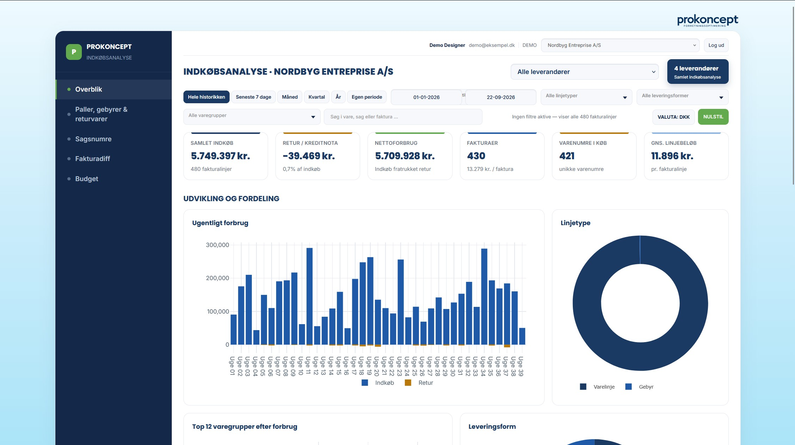

Fra fakturalinje til beslutningsgrundlag.
Filtrér køb, se udvikling og fordeling, og find de varegrupper og leveringsformer, der skal prioriteres.
Indkøbsdashboardet samler også jeres leverandør- og samhandelsaftaler, aftalepriser og rabatter. Med overblik over varslede prisstigninger kan I følge op på aftalerne og handle i god tid.
- Periode- og leverandørfiltre
- Nøgletal på ét blik
- Varegrupper og leveringsformer
- Detaljer helt ned på fakturalinje
- Aftaler, aftalepriser og rabatter
- Overblik over varslede prisstigninger

Demoen åbner her på siden og bruger eksempeldata.
20 minutters gratis online sparring for nye kunder
Lad os tale om en løsning til jeres behov.
Vi tager udgangspunkt i jeres hverdag og finder sammen et relevant næste skridt.